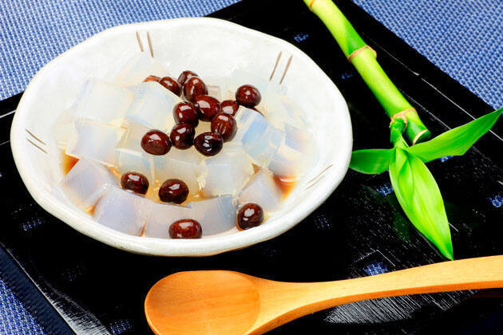

| MENÚ |
|---|
 |
 |
 |
| El Mizu Yokan es un bocadillo con una textura suave y
agradable que se caracteriza por su frescura y textura suave.con un precion de $70 |
Es un tipo de dulce japonés que consiste en dos bizcochos de forma redonda (este tipo de pan se denomina kasutera)
relleno de anko, que es una pasta de judías hecha con la variante de judías azuki $60 |
El mamekan es un postre japonés 🤤 hecho de pequeños cubos de gelatina de agar,
una gelatina blanca translúcida hecha de algas rojas o algas marinas.con un precio
de $100 |
 |
 |
 |
| El mitarashi dango es una brocheta asada en robata japonesa de pequeñas esferas de harina de arroz cubiertas con un sírope de salsa de soja,
azúcar y agua |
Los dango son bolitas que suelen elaborarse con harina de arroz glutinoso (mochiko), de textura un tanto pegajosa,
o con joshinko (harina de arroz no glutinoso). Aunque se consumen todo el año, hay diversas variedades que se comen tradicionalmente en temporadas concretas |
La kasutera es un bizcocho o bizcochuelo japonés con un pronunciado sabor a huevo y una textura esponjosa un poco húmeda. |
 | >
 |
 | >
| El flan es un postre lácteo tradicional, típico de nuestra gastronomía. Se prepara normalmente con huevos enteros, leche y azúca |
El halo-halo (del tagalo halò, 'mezcla') es un popular postre filipino conformado por una mezcla de hielo raspado
y leche evaporada a la que se añaden diversas judías dulces cocidas y frutas |
helado mochi es un dulce de origen japonés que consiste en una masa de arroz glutinoso machacado
y relleno de helado. |